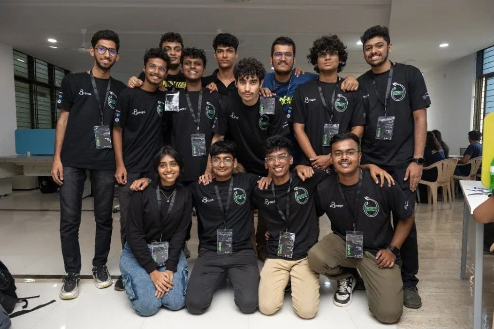
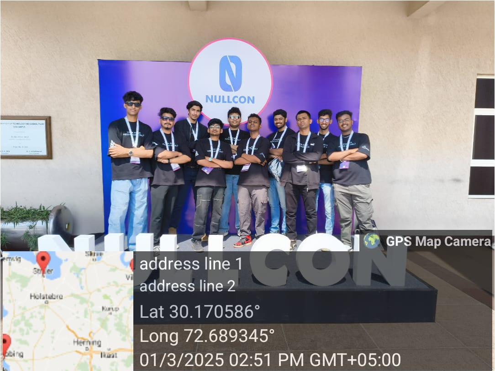

My Activities & Achievements
I received the Best Outgoing Student Award from the Department of Cybersecurity and Forensics. This
recognition was given for my academic excellence, leadership, and active contributions to the
department's growth and student community.
I was honored with the Meritorious Student Award in recognition of my consistent academic
performance and dedication throughout my studies. This award highlights my commitment to excellence
and my proactive involvement in curricular and extracurricular activities.

Organized Shunya CTF, a national-level Capture The Flag (CTF) competition, as part of the nCreeps
team. The event attracted participants from across the country, challenging them with real-world
cybersecurity problems and fostering a vibrant community of ethical hackers and learners.

Participated in Nullcon, a premier cybersecurity conference, where I engaged with industry experts,
learned about the latest trends in cybersecurity, and networked with professionals from around the
world. This experience enhanced my knowledge and provided valuable insights into the cybersecurity
landscape.

Hosted an online CTF event called ShunyaCTF Aarambha, where I was responsible for developing
challenges in the Web category. This experience allowed me to design engaging and technically
challenging problems for participants, helping them enhance their web security skills and fostering
a collaborative learning environment within the cybersecurity community.

Visited the Cisco office in Bangalore, where I had the opportunity to interact with the Cisco
Security team. We discussed in depth how Cisco Talos supports security researchers by providing
threat intelligence and resources. The team also shared insights into Cisco's approach to handling
security threats, emphasizing their proactive strategies and collaborative efforts to protect
organizations worldwide.

I conducted a cybersecurity awareness session where I explained various domains of cybersecurity,
including network security, application security, and social engineering. The session aimed to
educate participants about common threats, best practices for staying safe online, and the
importance of adopting a security-first mindset in both personal and professional environments.